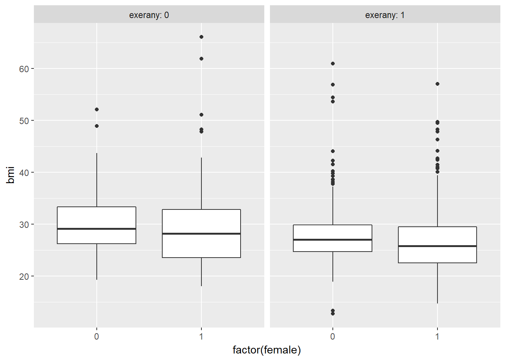

Chapter 2 Linear Regression on a small SMART data set
2.1 BRFSS and SMART
The Centers for Disease Control analyzes Behavioral Risk Factor Surveillance System (BRFSS) survey data for specific metropolitan and micropolitan statistical areas (MMSAs) in a program called the Selected Metropolitan/Micropolitan Area Risk Trends of BRFSS (SMART BRFSS.)
In this work, we will focus on data from the 2016 SMART, and in particular on data from the Cleveland-Elyria, OH, Metropolitan Statistical Area. The purpose of this survey is to provide localized health information that can help public health practitioners identify local emerging health problems, plan and evaluate local responses, and efficiently allocate resources to specific needs.
2.1.1 Key resources
- the full data are available in the form of the 2016 SMART BRFSS MMSA Data, found in a zipped SAS Transport Format file. The data were released in August 2017.
- the MMSA Variable Layout PDF which simply lists the variables included in the data file
- the Calculated Variables PDF which describes the risk factors by data variable names - there is also an online summary matrix of these calculated variables, as well.
- the lengthy 2016 Survey Questions PDF which lists all questions asked as part of the BRFSS in 2016
- the enormous Codebook for the 2016 BRFSS Survey PDF which identifies the variables by name for us.
Later this term, we’ll use all of those resources to help construct a more complete data set than we’ll study today. I’ll also demonstrate how I built the smartcle1 data set that we’ll use in this Chapter.
2.2 The smartcle1 data: Cookbook
The smartcle1.csv data file available on the Data and Code page of our website describes information on 11 variables for 1036 respondents to the BRFSS 2016, who live in the Cleveland-Elyria, OH, Metropolitan Statistical Area. The variables in the smartcle1.csv file are listed below, along with (in some cases) the BRFSS items that generate these responses.
| Variable | Description |
|---|---|
SEQNO |
respondent identification number (all begin with 2016) |
physhealth |
Now thinking about your physical health, which includes physical illness and injury, for how many days during the past 30 days was your physical health not good? |
menthealth |
Now thinking about your mental health, which includes stress, depression, and problems with emotions, for how many days during the past 30 days was your mental health not good? |
poorhealth |
During the past 30 days, for about how many days did poor physical or mental health keep you from doing your usual activities, such as self-care, work, or recreation? |
genhealth |
Would you say that in general, your health is … (five categories: Excellent, Very Good, Good, Fair or Poor) |
bmi |
Body mass index, in kg/m2 |
female |
Sex, 1 = female, 0 = male |
internet30 |
Have you used the internet in the past 30 days? (1 = yes, 0 = no) |
exerany |
During the past month, other than your regular job, did you participate in any physical activities or exercises such as running, calisthenics, golf, gardening, or walking for exercise? (1 = yes, 0 = no) |
sleephrs |
On average, how many hours of sleep do you get in a 24-hour period? |
alcdays |
How many days during the past 30 days did you have at least one drink of any alcoholic beverage such as beer, wine, a malt beverage or liquor? |
str(smartcle1)Classes 'tbl_df', 'tbl' and 'data.frame': 1036 obs. of 11 variables:
$ SEQNO : num 2.02e+09 2.02e+09 2.02e+09 2.02e+09 2.02e+09 ...
$ physhealth: int 0 0 1 0 5 4 2 2 0 0 ...
$ menthealth: int 0 0 5 0 0 18 0 3 0 0 ...
$ poorhealth: int NA NA 0 NA 0 6 0 0 NA NA ...
$ genhealth : Factor w/ 5 levels "1_Excellent",..: 2 1 2 3 1 2 3 3 2 3 ...
$ bmi : num 26.7 23.7 26.9 21.7 24.1 ...
$ female : int 1 0 0 1 0 0 1 1 0 0 ...
$ internet30: int 1 1 1 1 1 1 1 1 1 1 ...
$ exerany : int 1 1 0 1 1 1 1 1 1 0 ...
$ sleephrs : int 6 6 8 9 7 5 9 7 7 7 ...
$ alcdays : int 1 4 4 3 2 28 4 2 4 25 ...2.3 smartcle2: Omitting Missing Observations: Complete-Case Analyses
For the purpose of fitting our first few models, we will eliminate the missingness problem, and look only at the complete cases in our smartcle1 data. We will discuss methods for imputing missing data later in these Notes.
To inspect the missingness in our data, we might consider using the skim function from the skimr package. We’ll exclude the respondent identifier code (SEQNO) from this summary as uninteresting.
skim_with(numeric = list(hist = NULL), integer = list(hist = NULL))
## above line eliminates the sparkline histograms
## it can be commented out when working in the console,
## but I need it to produce the Notes without errors right now
smartcle1 %>%
skim(-SEQNO)Skim summary statistics
n obs: 1036
n variables: 11
Variable type: factor
variable missing complete n n_unique
genhealth 3 1033 1036 5
top_counts ordered
2_V: 350, 3_G: 344, 1_E: 173, 4_F: 122 FALSE
Variable type: integer
variable missing complete n mean sd p0 p25 median p75 p100
alcdays 46 990 1036 4.65 8.05 0 0 1 4 30
exerany 3 1033 1036 0.76 0.43 0 1 1 1 1
female 0 1036 1036 0.6 0.49 0 0 1 1 1
internet30 6 1030 1036 0.81 0.39 0 1 1 1 1
menthealth 11 1025 1036 2.72 6.82 0 0 0 2 30
physhealth 17 1019 1036 3.97 8.67 0 0 0 2 30
poorhealth 543 493 1036 4.07 8.09 0 0 0 3 30
sleephrs 8 1028 1036 7.02 1.53 1 6 7 8 20
Variable type: numeric
variable missing complete n mean sd p0 p25 median p75 p100
bmi 84 952 1036 27.89 6.47 12.71 23.7 26.68 30.53 66.06Now, we’ll create a new tibble called smartcle2 which contains every variable except poorhealth, and which includes all respondents with complete data on the variables (other than poorhealth). We’ll store those observations with complete data in the smartcle2 tibble.
smartcle2 <- smartcle1 %>%
select(-poorhealth) %>%
filter(complete.cases(.))
smartcle2# A tibble: 896 x 10
SEQNO physhealth menthealth genhealth bmi female internet30 exerany
<dbl> <int> <int> <fct> <dbl> <int> <int> <int>
1 2.02e9 0 0 2_VeryGo~ 26.7 1 1 1
2 2.02e9 0 0 1_Excell~ 23.7 0 1 1
3 2.02e9 1 5 2_VeryGo~ 26.9 0 1 0
4 2.02e9 0 0 3_Good 21.7 1 1 1
5 2.02e9 5 0 1_Excell~ 24.1 0 1 1
6 2.02e9 4 18 2_VeryGo~ 27.6 0 1 1
7 2.02e9 2 0 3_Good 25.7 1 1 1
8 2.02e9 2 3 3_Good 28.5 1 1 1
9 2.02e9 0 0 2_VeryGo~ 28.6 0 1 1
10 2.02e9 0 0 3_Good 23.1 0 1 0
# ... with 886 more rows, and 2 more variables: sleephrs <int>, alcdays
# <int>Note that there are only 896 respondents with complete data on the 10 variables (excluding poorhealth) in the smartcle2 tibble, as compared to our original smartcle1 data which described 1036 respondents and 11 variables, but with lots of missing data.
2.4 Summarizing the smartcle2 data numerically
2.4.1 The New Toy: The skim function
skim(smartcle2, -SEQNO)Skim summary statistics
n obs: 896
n variables: 10
Variable type: factor
variable missing complete n n_unique
genhealth 0 896 896 5
top_counts ordered
2_V: 306, 3_G: 295, 1_E: 155, 4_F: 102 FALSE
Variable type: integer
variable missing complete n mean sd p0 p25 median p75 p100
alcdays 0 896 896 4.83 8.14 0 0 1 5 30
exerany 0 896 896 0.77 0.42 0 1 1 1 1
female 0 896 896 0.58 0.49 0 0 1 1 1
internet30 0 896 896 0.81 0.39 0 1 1 1 1
menthealth 0 896 896 2.69 6.72 0 0 0 2 30
physhealth 0 896 896 3.99 8.64 0 0 0 2 30
sleephrs 0 896 896 7.02 1.48 1 6 7 8 20
Variable type: numeric
variable missing complete n mean sd p0 p25 median p75 p100
bmi 0 896 896 27.87 6.33 12.71 23.7 26.8 30.53 66.062.4.2 The usual summary for a data frame
Of course, we can use the usual summary to get some basic information about the data.
summary(smartcle2) SEQNO physhealth menthealth genhealth
Min. :2.016e+09 Min. : 0.00 Min. : 0.000 1_Excellent:155
1st Qu.:2.016e+09 1st Qu.: 0.00 1st Qu.: 0.000 2_VeryGood :306
Median :2.016e+09 Median : 0.00 Median : 0.000 3_Good :295
Mean :2.016e+09 Mean : 3.99 Mean : 2.693 4_Fair :102
3rd Qu.:2.016e+09 3rd Qu.: 2.00 3rd Qu.: 2.000 5_Poor : 38
Max. :2.016e+09 Max. :30.00 Max. :30.000
bmi female internet30 exerany
Min. :12.71 Min. :0.0000 Min. :0.0000 Min. :0.0000
1st Qu.:23.70 1st Qu.:0.0000 1st Qu.:1.0000 1st Qu.:1.0000
Median :26.80 Median :1.0000 Median :1.0000 Median :1.0000
Mean :27.87 Mean :0.5848 Mean :0.8147 Mean :0.7667
3rd Qu.:30.53 3rd Qu.:1.0000 3rd Qu.:1.0000 3rd Qu.:1.0000
Max. :66.06 Max. :1.0000 Max. :1.0000 Max. :1.0000
sleephrs alcdays
Min. : 1.000 Min. : 0.000
1st Qu.: 6.000 1st Qu.: 0.000
Median : 7.000 Median : 1.000
Mean : 7.022 Mean : 4.834
3rd Qu.: 8.000 3rd Qu.: 5.000
Max. :20.000 Max. :30.000 2.4.3 The describe function in Hmisc
Or we can use the describe function from the Hmisc package.
Hmisc::describe(select(smartcle2, bmi, genhealth, female))select(smartcle2, bmi, genhealth, female)
3 Variables 896 Observations
---------------------------------------------------------------------------
bmi
n missing distinct Info Mean Gmd .05 .10
896 0 467 1 27.87 6.572 20.06 21.23
.25 .50 .75 .90 .95
23.70 26.80 30.53 35.36 39.30
lowest : 12.71 13.34 14.72 16.22 17.30, highest: 56.89 57.04 60.95 61.84 66.06
---------------------------------------------------------------------------
genhealth
n missing distinct
896 0 5
Value 1_Excellent 2_VeryGood 3_Good 4_Fair 5_Poor
Frequency 155 306 295 102 38
Proportion 0.173 0.342 0.329 0.114 0.042
---------------------------------------------------------------------------
female
n missing distinct Info Sum Mean Gmd
896 0 2 0.728 524 0.5848 0.4862
---------------------------------------------------------------------------2.5 Counting as exploratory data analysis
Counting things can be amazingly useful.
2.5.1 How many respondents had exercised in the past 30 days? Did this vary by sex?
smartcle2 %>% count(female, exerany) %>% mutate(percent = 100*n / sum(n))# A tibble: 4 x 4
female exerany n percent
<int> <int> <int> <dbl>
1 0 0 64 7.14
2 0 1 308 34.4
3 1 0 145 16.2
4 1 1 379 42.3 so we know now that 42.3% of the subjects in our data were women who exercised. Suppose that instead we want to find the percentage of exercisers within each sex…
smartcle2 %>%
count(female, exerany) %>%
group_by(female) %>%
mutate(prob = 100*n / sum(n)) # A tibble: 4 x 4
# Groups: female [2]
female exerany n prob
<int> <int> <int> <dbl>
1 0 0 64 17.2
2 0 1 308 82.8
3 1 0 145 27.7
4 1 1 379 72.3and now we know that 82.8% of the males exercised at least once in the last 30 days, as compared to 72.3% of the females.
2.5.2 What’s the distribution of sleephrs?
We can count quantitative variables with discrete sets of possible values, like sleephrs, which is captured as an integer (that must fall between 0 and 24.)
smartcle2 %>% count(sleephrs)# A tibble: 14 x 2
sleephrs n
<int> <int>
1 1 5
2 2 1
3 3 6
4 4 20
5 5 63
6 6 192
7 7 276
8 8 266
9 9 38
10 10 22
11 11 2
12 12 2
13 16 2
14 20 1Of course, a natural summary of a quantitative variable like this would be graphical.
ggplot(smartcle2, aes(sleephrs)) +
geom_histogram(binwidth = 1, fill = "dodgerblue", col = "darkred")
2.5.3 What’s the distribution of BMI?
ggplot(smartcle2, aes(bmi)) +
geom_histogram(bins = 30, col = "white")2.5.4 How many of the respondents have a BMI below 30?
smartcle2 %>% count(bmi < 30) %>% mutate(proportion = n / sum(n))# A tibble: 2 x 3
`bmi < 30` n proportion
<lgl> <int> <dbl>
1 F 253 0.282
2 T 643 0.7182.5.5 How many of the respondents who have a BMI < 30 exercised?
smartcle2 %>% count(exerany, bmi < 30) %>%
group_by(exerany) %>%
mutate(percent = 100*n/sum(n))# A tibble: 4 x 4
# Groups: exerany [2]
exerany `bmi < 30` n percent
<int> <lgl> <int> <dbl>
1 0 F 88 42.1
2 0 T 121 57.9
3 1 F 165 24.0
4 1 T 522 76.02.5.6 Is obesity associated with sex, in these data?
smartcle2 %>% count(female, bmi < 30) %>%
group_by(female) %>%
mutate(percent = 100*n/sum(n))# A tibble: 4 x 4
# Groups: female [2]
female `bmi < 30` n percent
<int> <lgl> <int> <dbl>
1 0 F 105 28.2
2 0 T 267 71.8
3 1 F 148 28.2
4 1 T 376 71.82.5.7 Comparing sleephrs summaries by obesity status
Can we compare the sleephrs means, medians and 75th percentiles for respondents whose BMI is below 30 to the respondents whose BMI is not?
smartcle2 %>%
group_by(bmi < 30) %>%
summarize(mean(sleephrs), median(sleephrs),
q75 = quantile(sleephrs, 0.75))# A tibble: 2 x 4
`bmi < 30` `mean(sleephrs)` `median(sleephrs)` q75
<lgl> <dbl> <int> <dbl>
1 F 6.93 7 8.00
2 T 7.06 7 8.002.5.8 The skim function within a pipe
The skim function works within pipes and with the other tidyverse functions.
smartcle2 %>%
group_by(exerany) %>%
skim(bmi, sleephrs)Skim summary statistics
n obs: 896
n variables: 10
group variables: exerany
Variable type: integer
exerany variable missing complete n mean sd p0 p25 median p75 p100
0 sleephrs 0 209 209 7 1.85 1 6 7 8 20
1 sleephrs 0 687 687 7.03 1.34 1 6 7 8 16
Variable type: numeric
exerany variable missing complete n mean sd p0 p25 median p75
0 bmi 0 209 209 29.57 7.46 18 24.11 28.49 33.13
1 bmi 0 687 687 27.35 5.84 12.71 23.7 26.52 29.81
p100
66.06
60.952.6 First Modeling Attempt: Can bmi predict physhealth?
We’ll start with an effort to predict physhealth using bmi. A natural graph would be a scatterplot.
ggplot(data = smartcle2, aes(x = bmi, y = physhealth)) +
geom_point()
A good question to ask ourselves here might be: “In what BMI range can we make a reasonable prediction of physhealth?”
Now, we might take the plot above and add a simple linear model …
ggplot(data = smartcle2, aes(x = bmi, y = physhealth)) +
geom_point() +
geom_smooth(method = "lm", se = FALSE)
which shows the same least squares regression model that we can fit with the lm command.
2.6.1 Fitting a Simple Regression Model
model_A <- lm(physhealth ~ bmi, data = smartcle2)
model_A
Call:
lm(formula = physhealth ~ bmi, data = smartcle2)
Coefficients:
(Intercept) bmi
-1.4514 0.1953 summary(model_A)
Call:
lm(formula = physhealth ~ bmi, data = smartcle2)
Residuals:
Min 1Q Median 3Q Max
-9.171 -4.057 -3.193 -1.576 28.073
Coefficients:
Estimate Std. Error t value Pr(>|t|)
(Intercept) -1.45143 1.29185 -1.124 0.262
bmi 0.19527 0.04521 4.319 1.74e-05 ***
---
Signif. codes: 0 '***' 0.001 '**' 0.01 '*' 0.05 '.' 0.1 ' ' 1
Residual standard error: 8.556 on 894 degrees of freedom
Multiple R-squared: 0.02044, Adjusted R-squared: 0.01934
F-statistic: 18.65 on 1 and 894 DF, p-value: 1.742e-05confint(model_A, level = 0.95) 2.5 % 97.5 %
(Intercept) -3.9868457 1.0839862
bmi 0.1065409 0.2840068The model coefficients can be obtained by printing the model object, and the summary function provides several useful descriptions of the model’s residuals, its statistical significance, and quality of fit.
2.6.2 Model Summary for a Simple (One-Predictor) Regression
The fitted model predicts physhealth with the equation -1.45 + 0.195*bmi, as we can read off from the model coefficients.
Each of the 896 respondents included in the smartcle2 data makes a contribution to this model.
2.6.2.1 Residuals
Suppose Harry is one of the people in that group, and Harry’s data is bmi = 20, and physhealth = 3.
- Harry’s observed value of
physhealthis just the value we have in the data for them, in this case, observedphyshealth= 3 for Harry. - Harry’s fitted or predicted
physhealthvalue is the result of calculating -1.45 + 0.195*bmifor Harry. So, if Harry’s BMI was 20, then Harry’s predictedphyshealthvalue is -1.45 + (0.195)(20) = 2.45. - The residual for Harry is then his observed outcome minus his fitted outcome, so Harry has a residual of 3 - 2.45 = 0.55.
- Graphically, a residual represents vertical distance between the observed point and the fitted regression line.
- Points above the regression line will have positive residuals, and points below the regression line will have negative residuals. Points on the line have zero residuals.
The residuals are summarized at the top of the summary output for linear model.
- The mean residual will always be zero in an ordinary least squares model, but a five number summary of the residuals is provided by the summary, as is an estimated standard deviation of the residuals (called here the Residual standard error.)
- In the
smartcle2data, the minimum residual was -9.17, so for one subject, the observed value was 9.17 days smaller than the predicted value. This means that the prediction was 9.17 days too large for that subject. - Similarly, the maximum residual was 28.07 days, so for one subject the prediction was 28.07 days too small. Not a strong performance.
- In a least squares model, the residuals are assumed to follow a Normal distribution, with mean zero, and standard deviation (for the
smartcle2data) of about 8.6 days. Thus, by the definition of a Normal distribution, we’d expect - about 68% of the residuals to be between -8.6 and +8.6 days,
- about 95% of the residuals to be between -17.2 and +17.2 days,
- about all (99.7%) of the residuals to be between -25.8 and +25.8 days.
2.6.2.2 Coefficients section
The summary for a linear model shows Estimates, Standard Errors, t values and p values for each coefficient fit.
- The Estimates are the point estimates of the intercept and slope of
bmiin our model. - In this case, our estimated slope is 0.195, which implies that if Harry’s BMI is 20 and Sally’s BMI is 21, we predict that Sally’s
physhealthwill be 0.195 days larger than Harry’s. - The Standard Errors are also provided for each estimate. We can create rough 95% confidence intervals by adding and subtracting two standard errors from each coefficient, or we can get a slightly more accurate answer with the
confintfunction. - Here, the 95% confidence interval for the slope of
bmiis estimated to be (0.11, 0.28). This is a good measure of the uncertainty in the slope that is captured by our model. We are 95% confident in the process of building this interval, but this doesn’t mean we’re 95% sure that the true slope is actually in that interval.
Also available are a t value (just the Estimate divided by the Standard Error) and the appropriate p value for testing the null hypothesis that the true value of the coefficient is 0 against a two-tailed alternative.
- If a slope coefficient is statistically significantly different from 0, this implies that 0 will not be part of the uncertainty interval obtained through
confint. - If the slope was zero, it would suggest that
bmiwould add no predictive value to the model. But that’s unlikely here.
If the bmi slope coefficient is associated with a small p value, as in the case of our model_A, it suggests that the model including bmi is statistically significantly better at predicting physhealth than the model without bmi.
- Without
bmiourmodel_Awould become an intercept-only model, in this case, which would predict the meanphyshealthfor everyone, regardless of any other information.
2.6.2.3 Model Fit Summaries
The summary of a linear model also displays:
- The residual standard error and associated degrees of freedom for the residuals.
- For a simple (one-predictor) least regression like this, the residual degrees of freedom will be the sample size minus 2.
- The multiple R-squared (or coefficient of determination)
- This is interpreted as the proportion of variation in the outcome (
physhealth) accounted for by the model, and will always fall between 0 and 1 as a result. - Our model_A accounts for a mere 2% of the variation in
physhealth. - The Adjusted R-squared value “adjusts” for the size of our model in terms of the number of coefficients included in the model.
- The adjusted R-squared will always be less than the Multiple R-squared.
- We still hope to find models with relatively large adjusted R2 values.
- In particular, we hope to find models where the adjusted R2 isn’t substantially less than the Multiple R-squared.
- The adjusted R-squared is usually a better estimate of likely performance of our model in new data than is the Multiple R-squared.
- The adjusted R-squared result is no longer interpretable as a proportion of anything - in fact, it can fall below 0.
- We can obtain the adjusted R2 from the raw R2, the number of observations N and the number of predictors p included in the model, as follows:
\[ R^2_{adj} = 1 - \frac{(1 - R^2)(N - 1)}{N - p - 1}, \]
- The F statistic and p value from a global ANOVA test of the model.
- Obtaining a statistically significant result here is usually pretty straightforward, since the comparison is between our model, and a model which simply predicts the mean value of the outcome for everyone.
- In a simple (one-predictor) linear regression like this, the t statistic for the slope is just the square root of the F statistic, and the resulting p values for the slope’s t test and for the global F test will be identical.
- To see the complete ANOVA F test for this model, we can run
anova(model_A).
anova(model_A)Analysis of Variance Table
Response: physhealth
Df Sum Sq Mean Sq F value Pr(>F)
bmi 1 1366 1365.5 18.655 1.742e-05 ***
Residuals 894 65441 73.2
---
Signif. codes: 0 '***' 0.001 '**' 0.01 '*' 0.05 '.' 0.1 ' ' 12.6.3 Using the broom package
The broom package has three functions of particular use in a linear regression model:
2.6.3.1 The tidy function
tidy builds a data frame/tibble containing information about the coefficients in the model, their standard errors, t statistics and p values.
tidy(model_A) term estimate std.error statistic p.value
1 (Intercept) -1.4514298 1.29185199 -1.123526 2.615156e-01
2 bmi 0.1952739 0.04521145 4.319125 1.741859e-052.6.3.2 The glance function
glance` builds a data frame/tibble containing summary statistics about the model, including
- the (raw) multiple R2 and adjusted R^2
sigmawhich is the residual standard error- the F
statistic,p.valuemodeldfanddf.residualassociated with the global ANOVA test, plus - several statistics that will be useful in comparing models down the line:
- the model’s log likelihood function value,
logLik - the model’s Akaike’s Information Criterion value,
AIC - the model’s Bayesian Information Criterion value,
BIC - and the model’s
deviancestatistic
glance(model_A) r.squared adj.r.squared sigma statistic p.value df logLik
1 0.02044019 0.01934449 8.555737 18.65484 1.741859e-05 2 -3193.723
AIC BIC deviance df.residual
1 6393.446 6407.84 65441.36 8942.6.3.3 The augment function
augment builds a data frame/tibble which adds fitted values, residuals and other diagnostic summaries that describe each observation to the original data used to fit the model, and this includes
.fittedand.resid, the fitted and residual values, in addition to.hat, the leverage value for this observation.cooksd, the Cook’s distance measure of influence for this observation.stdresid, the standardized residual (think of this as a z-score - a measure of the residual divided by its associated standard deviation.sigma)- and
se.fitwhich will help us generate prediction intervals for the model downstream
Note that each of the new columns begins with . to avoid overwriting any data.
head(augment(model_A)) physhealth bmi .fitted .se.fit .resid .hat .sigma
1 0 26.69 3.760430 0.2907252 -3.76043009 0.001154651 8.559600
2 0 23.70 3.176561 0.3422908 -3.17656119 0.001600574 8.559865
3 1 26.92 3.805343 0.2890054 -2.80534308 0.001141030 8.560010
4 0 21.66 2.778202 0.4005101 -2.77820248 0.002191352 8.560020
5 5 24.09 3.252718 0.3329154 1.74728200 0.001514095 8.560326
6 4 27.64 3.945940 0.2860087 0.05405972 0.001117490 8.560526
.cooksd .std.resid
1 1.117852e-04 -0.439775451
2 1.106717e-04 -0.371575999
3 6.147744e-05 -0.328077528
4 1.160381e-04 -0.325074461
5 3.167016e-05 0.204378225
6 2.235722e-08 0.006322069For more on the broom package, you may want to look at this vignette.
2.6.4 How does the model do? (Residuals vs. Fitted Values)
- Remember that the R2 value was about 2%.
plot(model_A, which = 1)
This is a plot of residuals vs. fitted values. The goal here is for this plot to look like a random scatter of points, perhaps like a “fuzzy football”, and that’s not what we have. Why?
If you prefer, here’s a ggplot2 version of a similar plot, now looking at standardized residuals instead of raw residuals, and adding a loess smooth and a linear fit to the result.
ggplot(augment(model_A), aes(x = .fitted, y = .std.resid)) +
geom_point() +
geom_smooth(method = "lm", se = FALSE, col = "red", linetype = "dashed") +
geom_smooth(method = "loess", se = FALSE, col = "navy") +
theme_bw()The problem we’re having here becomes, I think, a little more obvious if we look at what we’re predicting. Does physhealth look like a good candidate for a linear model?
ggplot(smartcle2, aes(x = physhealth)) +
geom_histogram(bins = 30, fill = "dodgerblue", color = "royalblue")smartcle2 %>% count(physhealth == 0, physhealth == 30)# A tibble: 3 x 3
`physhealth == 0` `physhealth == 30` n
<lgl> <lgl> <int>
1 F F 231
2 F T 74
3 T F 591No matter what model we fit, if we are predicting physhealth, and most of the data are values of 0 and 30, we have limited variation in our outcome, and so our linear model will be somewhat questionable just on that basis.
A normal Q-Q plot of the standardized residuals for our model_A shows this problem, too.
plot(model_A, which = 2)
We’re going to need a method to deal with this sort of outcome, that has both a floor and a ceiling. We’ll get there eventually, but linear regression alone doesn’t look promising.
All right, so that didn’t go anywhere great. Let’s try again, with a new outcome.
2.7 A New Small Study: Predicting BMI
We’ll begin by investigating the problem of predicting bmi, at first with just three regression inputs: sex, exerany and sleephrs, in our new smartcle2 data set.
- The outcome of interest is
bmi. - Inputs to the regression model are:
female= 1 if the subject is female, and 0 if they are maleexerany= 1 if the subject exercised in the past 30 days, and 0 if they didn’tsleephrs= hours slept in a typical 24-hour period (treated as quantitative)
2.7.1 Does female predict bmi well?
2.7.1.1 Graphical Assessment
ggplot(smartcle2, aes(x = female, y = bmi)) +
geom_point()
Not so helpful. We should probably specify that female is a factor, and try another plotting approach.
ggplot(smartcle2, aes(x = factor(female), y = bmi)) +
geom_boxplot()The median BMI looks a little higher for males. Let’s see if a model reflects that.
2.8 c2_m1: A simple t-test model
c2_m1 <- lm(bmi ~ female, data = smartcle2)
c2_m1
Call:
lm(formula = bmi ~ female, data = smartcle2)
Coefficients:
(Intercept) female
28.3600 -0.8457 summary(c2_m1)
Call:
lm(formula = bmi ~ female, data = smartcle2)
Residuals:
Min 1Q Median 3Q Max
-15.650 -4.129 -1.080 2.727 38.546
Coefficients:
Estimate Std. Error t value Pr(>|t|)
(Intercept) 28.3600 0.3274 86.613 <2e-16 ***
female -0.8457 0.4282 -1.975 0.0485 *
---
Signif. codes: 0 '***' 0.001 '**' 0.01 '*' 0.05 '.' 0.1 ' ' 1
Residual standard error: 6.315 on 894 degrees of freedom
Multiple R-squared: 0.004345, Adjusted R-squared: 0.003231
F-statistic: 3.902 on 1 and 894 DF, p-value: 0.04855confint(c2_m1) 2.5 % 97.5 %
(Intercept) 27.717372 29.00262801
female -1.686052 -0.00539878The model suggests, based on these 896 subjects, that
- our best prediction for males is BMI = 28.36 kg/m2, and
- our best prediction for females is BMI = 28.36 - 0.85 = 27.51 kg/m2.
- the mean difference between females and males is -0.85 kg/m2 in BMI
- a 95% confidence (uncertainty) interval for that mean female - male difference in BMI ranges from -1.69 to -0.01
- the model accounts for 0.4% of the variation in BMI, so that knowing the respondent’s sex does very little to reduce the size of the prediction errors as compared to an intercept only model that would predict the overall mean (regardless of sex) for all subjects.
- the model makes some enormous errors, with one subject being predicted to have a BMI 38 points lower than his/her actual BMI.
Note that this simple regression model just gives us the t-test.
t.test(bmi ~ female, var.equal = TRUE, data = smartcle2)
Two Sample t-test
data: bmi by female
t = 1.9752, df = 894, p-value = 0.04855
alternative hypothesis: true difference in means is not equal to 0
95 percent confidence interval:
0.00539878 1.68605160
sample estimates:
mean in group 0 mean in group 1
28.36000 27.51427 2.9 c2_m2: Adding another predictor (two-way ANOVA without interaction)
When we add in the information about exerany to our original model, we might first picture the data. We could look at separate histograms,
ggplot(smartcle2, aes(x = bmi)) +
geom_histogram(bins = 30) +
facet_grid(female ~ exerany, labeller = label_both)or maybe boxplots?
ggplot(smartcle2, aes(x = factor(female), y = bmi)) +
geom_boxplot() +
facet_wrap(~ exerany, labeller = label_both)
ggplot(smartcle2, aes(x = female, y = bmi))+
geom_point(size = 3, alpha = 0.2) +
theme_bw() +
facet_wrap(~ exerany, labeller = label_both)
OK. Let’s try fitting a model.
c2_m2 <- lm(bmi ~ female + exerany, data = smartcle2)
c2_m2
Call:
lm(formula = bmi ~ female + exerany, data = smartcle2)
Coefficients:
(Intercept) female exerany
30.334 -1.095 -2.384 This new model predicts only four predicted values:
bmi= 30.334 if the subject is male and did not exercise (sofemale= 0 andexerany= 0)bmi= 30.334 - 1.095 = 29.239 if the subject is female and did not exercise (female= 1 andexerany= 0)bmi= 30.334 - 2.384 = 27.950 if the subject is male and exercised (sofemale= 0 andexerany= 1), and, finallybmi= 30.334 - 1.095 - 2.384 = 26.855 if the subject is female and exercised (so bothfemaleandexerany= 1).
For those who did not exercise, the model is:
bmi= 30.334 - 1.095female
and for those who did exercise, the model is:
bmi= 27.95 - 1.095female
Only the intercept of the bmi-female model changes depending on exerany.
summary(c2_m2)
Call:
lm(formula = bmi ~ female + exerany, data = smartcle2)
Residuals:
Min 1Q Median 3Q Max
-15.240 -4.091 -1.095 2.602 36.822
Coefficients:
Estimate Std. Error t value Pr(>|t|)
(Intercept) 30.3335 0.5231 57.99 < 2e-16 ***
female -1.0952 0.4262 -2.57 0.0103 *
exerany -2.3836 0.4965 -4.80 1.86e-06 ***
---
Signif. codes: 0 '***' 0.001 '**' 0.01 '*' 0.05 '.' 0.1 ' ' 1
Residual standard error: 6.239 on 893 degrees of freedom
Multiple R-squared: 0.02939, Adjusted R-squared: 0.02722
F-statistic: 13.52 on 2 and 893 DF, p-value: 1.641e-06confint(c2_m2) 2.5 % 97.5 %
(Intercept) 29.306846 31.3602182
female -1.931629 -0.2588299
exerany -3.358156 -1.4090777The slopes of both female and exerany have confidence intervals that are completely below zero, indicating that both female sex and exerany appear to be associated with reductions in bmi.
The R2 value suggests that just under 3% of the variation in bmi is accounted for by this ANOVA model.
In fact, this regression (on two binary indicator variables) is simply a two-way ANOVA model without an interaction term.
anova(c2_m2)Analysis of Variance Table
Response: bmi
Df Sum Sq Mean Sq F value Pr(>F)
female 1 156 155.61 3.9977 0.04586 *
exerany 1 897 896.93 23.0435 1.856e-06 ***
Residuals 893 34759 38.92
---
Signif. codes: 0 '***' 0.001 '**' 0.01 '*' 0.05 '.' 0.1 ' ' 12.10 c2_m3: Adding the interaction term (Two-way ANOVA with interaction)
Suppose we want to let the effect of female vary depending on the exerany status. Then we need to incorporate an interaction term in our model.
c2_m3 <- lm(bmi ~ female * exerany, data = smartcle2)
c2_m3
Call:
lm(formula = bmi ~ female * exerany, data = smartcle2)
Coefficients:
(Intercept) female exerany female:exerany
30.1359 -0.8104 -2.1450 -0.3592 So, for example, for a male who exercises, this model predicts
bmi= 30.136 - 0.810 (0) - 2.145 (1) - 0.359 (0)(1) = 30.136 - 2.145 = 27.991
And for a female who exercises, the model predicts
bmi= 30.136 - 0.810 (1) - 2.145 (1) - 0.359 (1)(1) = 30.136 - 0.810 - 2.145 - 0.359 = 26.822
For those who did not exercise, the model is:
bmi= 30.136 - 0.81female
But for those who did exercise, the model is:
bmi= (30.136 - 2.145) + (-0.810 + (-0.359))female, or ,,,bmi= 27.991 - 1.169female
Now, both the slope and the intercept of the bmi-female model change depending on exerany.
summary(c2_m3)
Call:
lm(formula = bmi ~ female * exerany, data = smartcle2)
Residuals:
Min 1Q Median 3Q Max
-15.281 -4.101 -1.061 2.566 36.734
Coefficients:
Estimate Std. Error t value Pr(>|t|)
(Intercept) 30.1359 0.7802 38.624 <2e-16 ***
female -0.8104 0.9367 -0.865 0.3872
exerany -2.1450 0.8575 -2.501 0.0125 *
female:exerany -0.3592 1.0520 -0.341 0.7328
---
Signif. codes: 0 '***' 0.001 '**' 0.01 '*' 0.05 '.' 0.1 ' ' 1
Residual standard error: 6.242 on 892 degrees of freedom
Multiple R-squared: 0.02952, Adjusted R-squared: 0.02625
F-statistic: 9.044 on 3 and 892 DF, p-value: 6.669e-06confint(c2_m3) 2.5 % 97.5 %
(Intercept) 28.604610 31.6672650
female -2.648893 1.0280526
exerany -3.827886 -0.4620407
female:exerany -2.423994 1.7055248In fact, this regression (on two binary indicator variables and a product term) is simply a two-way ANOVA model with an interaction term.
anova(c2_m3)Analysis of Variance Table
Response: bmi
Df Sum Sq Mean Sq F value Pr(>F)
female 1 156 155.61 3.9938 0.04597 *
exerany 1 897 896.93 23.0207 1.878e-06 ***
female:exerany 1 5 4.54 0.1166 0.73283
Residuals 892 34754 38.96
---
Signif. codes: 0 '***' 0.001 '**' 0.01 '*' 0.05 '.' 0.1 ' ' 1The interaction term doesn’t change very much here. Its uncertainty interval includes zero, and the overall model still accounts for just under 3% of the variation in bmi.
2.11 c2_m4: Using female and sleephrs in a model for bmi
ggplot(smartcle2, aes(x = sleephrs, y = bmi, color = factor(female))) +
geom_point() +
guides(col = FALSE) +
geom_smooth(method = "lm", se = FALSE) +
facet_wrap(~ female, labeller = label_both) Does the difference in slopes of bmi and sleephrs for males and females appear to be substantial and important?
c2_m4 <- lm(bmi ~ female * sleephrs, data = smartcle2)
summary(c2_m4)
Call:
lm(formula = bmi ~ female * sleephrs, data = smartcle2)
Residuals:
Min 1Q Median 3Q Max
-15.498 -4.179 -1.035 2.830 38.204
Coefficients:
Estimate Std. Error t value Pr(>|t|)
(Intercept) 27.2661 1.6320 16.707 <2e-16 ***
female 2.5263 2.0975 1.204 0.229
sleephrs 0.1569 0.2294 0.684 0.494
female:sleephrs -0.4797 0.2931 -1.636 0.102
---
Signif. codes: 0 '***' 0.001 '**' 0.01 '*' 0.05 '.' 0.1 ' ' 1
Residual standard error: 6.31 on 892 degrees of freedom
Multiple R-squared: 0.008341, Adjusted R-squared: 0.005006
F-statistic: 2.501 on 3 and 892 DF, p-value: 0.05818Does it seem as though the addition of sleephrs has improved our model substantially over a model with female alone (which, you recall, was c2_m1)?
Since the c2_m4 model contains the c2_m1 model’s predictors as a subset and the outcome is the same for each model, we consider the models nested and have some extra tools available to compare them.
- I might start by looking at the basic summaries for each model.
glance(c2_m4) r.squared adj.r.squared sigma statistic p.value df logLik
1 0.008341404 0.005006229 6.309685 2.50104 0.05818038 4 -2919.873
AIC BIC deviance df.residual
1 5849.747 5873.736 35512.42 892glance(c2_m1) r.squared adj.r.squared sigma statistic p.value df logLik
1 0.004345169 0.003231461 6.31531 3.901534 0.04854928 2 -2921.675
AIC BIC deviance df.residual
1 5849.35 5863.744 35655.53 894- The R2 is twice as large for the model with
sleephrs, but still very tiny. - The p value for the global ANOVA test is actually less significant in
c2_m4than inc2_m1. - Smaller AIC and smaller BIC statistics are more desirable. Here, there’s little to choose from, but
c2_m1is a little better on each standard. - We might also consider a significance test by looking at an ANOVA model comparison. This is only appropriate because
c2_m1is nested inc2_m4.
anova(c2_m4, c2_m1)Analysis of Variance Table
Model 1: bmi ~ female * sleephrs
Model 2: bmi ~ female
Res.Df RSS Df Sum of Sq F Pr(>F)
1 892 35512
2 894 35656 -2 -143.11 1.7973 0.1663The addition of the sleephrs term picked up 143 in the sum of squares column, at a cost of two degrees of freedom, yielding a p value of 0.166, suggesting that this isn’t a significant improvement over the model that just did a t-test on female.
2.12 Making Predictions with a Linear Regression Model
Recall model 4, which yields predictions for body mass index on the basis of the main effects of sex (female) and hours of sleep (sleephrs) and their interaction.
c2_m4
Call:
lm(formula = bmi ~ female * sleephrs, data = smartcle2)
Coefficients:
(Intercept) female sleephrs female:sleephrs
27.2661 2.5263 0.1569 -0.4797 2.12.1 Fitting an Individual Prediction and 95% Prediction Interval
What do we predict for the bmi of a subject who is female and gets 8 hours of sleep per night?
c2_new1 <- data_frame(female = 1, sleephrs = 8)
predict(c2_m4, newdata = c2_new1, interval = "prediction", level = 0.95) fit lwr upr
1 27.21065 14.8107 39.6106The predicted bmi for this new subject is 27.61. The prediction interval shows the bounds of a 95% uncertainty interval for a predicted bmi for an individual female subject who gets 8 hours of sleep on average per evening. From the predict function applied to a linear model, we can get the prediction intervals for any new data points in this manner.
2.12.2 Confidence Interval for an Average Prediction
- What do we predict for the average body mass index of a population of subjects who are female and sleep for 8 hours?
predict(c2_m4, newdata = c2_new1, interval = "confidence", level = 0.95) fit lwr upr
1 27.21065 26.57328 27.84801- How does this result compare to the prediction interval?
2.12.3 Fitting Multiple Individual Predictions to New Data
- How does our prediction change for a respondent if they instead get 7, or 9 hours of sleep? What if they are male, instead of female?
c2_new2 <- data_frame(subjectid = 1001:1006, female = c(1, 1, 1, 0, 0, 0), sleephrs = c(7, 8, 9, 7, 8, 9))
pred2 <- predict(c2_m4, newdata = c2_new2, interval = "prediction", level = 0.95) %>% tbl_df
result2 <- bind_cols(c2_new2, pred2)
result2# A tibble: 6 x 6
subjectid female sleephrs fit lwr upr
<int> <dbl> <dbl> <dbl> <dbl> <dbl>
1 1001 1.00 7.00 27.5 15.1 39.9
2 1002 1.00 8.00 27.2 14.8 39.6
3 1003 1.00 9.00 26.9 14.5 39.3
4 1004 0 7.00 28.4 16.0 40.8
5 1005 0 8.00 28.5 16.1 40.9
6 1006 0 9.00 28.7 16.2 41.1The result2 tibble contains predictions for each scenario.
- Which has a bigger impact on these predictions and prediction intervals? A one category change in
femaleor a one hour change insleephrs?
2.12.4 Simulation to represent predictive uncertainty in Model 4
Suppose we want to predict the bmi of a female subject who sleeps for eight hours per night. As we have seen, we can do this automatically for a linear model like this one, using the predict function applied to the linear model, but a simulation prediction can also be done. Recall the detail of c2_m4:
c2_m4
Call:
lm(formula = bmi ~ female * sleephrs, data = smartcle2)
Coefficients:
(Intercept) female sleephrs female:sleephrs
27.2661 2.5263 0.1569 -0.4797 glance(c2_m4) r.squared adj.r.squared sigma statistic p.value df logLik
1 0.008341404 0.005006229 6.309685 2.50104 0.05818038 4 -2919.873
AIC BIC deviance df.residual
1 5849.747 5873.736 35512.42 892We see that the residual standard error for our bmi predictions with this model is 6.31.
For a female respondent sleeping eight hours, recall that our point estimate (predicted value) of bmi is 27.21
predict(c2_m4, newdata = c2_new1, interval = "prediction", level = 0.95) fit lwr upr
1 27.21065 14.8107 39.6106The standard deviation is 6.31, so we could summarize the predictive distribution with a command that tells R to draw 1000 random numbers from a normal distribution with mean 27.21 and standard deviation 6.31. Let’s summarize that and get a quick picture.
set.seed(432094)
pred.sim <- rnorm(1000, 27.21, 6.31)
hist(pred.sim, col = "royalblue")mean(pred.sim)[1] 27.41856quantile(pred.sim, c(0.025, 0.975)) 2.5% 97.5%
14.48487 40.16778 How do these results compare to the prediction interval of (14.81, 39.61) that we generated earlier?
2.13 Centering the model
Our model c2_m4 has four predictors (the constant, sleephrs, female and their interaction) but just two inputs (female and sleephrs.) If we center the quantitative input sleephrs before building the model, we get a more interpretable interaction term.
smartcle2_c <- smartcle2 %>%
mutate(sleephrs_c = sleephrs - mean(sleephrs))
c2_m4_c <- lm(bmi ~ female * sleephrs_c, data = smartcle2_c)
summary(c2_m4_c)
Call:
lm(formula = bmi ~ female * sleephrs_c, data = smartcle2_c)
Residuals:
Min 1Q Median 3Q Max
-15.498 -4.179 -1.035 2.830 38.204
Coefficients:
Estimate Std. Error t value Pr(>|t|)
(Intercept) 28.3681 0.3274 86.658 <2e-16 ***
female -0.8420 0.4280 -1.967 0.0495 *
sleephrs_c 0.1569 0.2294 0.684 0.4940
female:sleephrs_c -0.4797 0.2931 -1.636 0.1021
---
Signif. codes: 0 '***' 0.001 '**' 0.01 '*' 0.05 '.' 0.1 ' ' 1
Residual standard error: 6.31 on 892 degrees of freedom
Multiple R-squared: 0.008341, Adjusted R-squared: 0.005006
F-statistic: 2.501 on 3 and 892 DF, p-value: 0.05818What has changed as compared to the original c2_m4?
- Our original model was
bmi= 27.26 + 2.53female+ 0.16sleephrs- 0.48femalexsleephrs - Our new model is
bmi= 28.37 - 0.84female+ 0.16 centeredsleephrs- 0.48femalex centeredsleephrs.
So our new model on centered data is:
- 28.37 + 0.16 centered
sleephrs_cfor male subjects, and - (28.37 - 0.84) + (0.16 - 0.48) centered
sleephrs_c, or 27.53 - 0.32 centeredsleephrs_cfor female subjects.
In our new (centered sleephrs_c) model,
- the main effect of
femalenow corresponds to a predictive difference (female - male) inbmiwithsleephrsat its mean value, 7.02 hours, - the intercept term is now the predicted
bmifor a male respondent who sleeps an average number of hours, and - the product term corresponds to the change in the slope of centered
sleephrs_conbmifor a female rather than a male subject, while - the residual standard deviation and the R-squared values remain unchanged from the model before centering.
2.13.1 Plot of Model 4 on Centered sleephrs: c2_m4_c
ggplot(smartcle2_c, aes(x = sleephrs_c, y = bmi, group = female, col = factor(female))) +
geom_point(alpha = 0.5, size = 2) +
geom_smooth(method = "lm", se = FALSE) +
guides(color = FALSE) +
labs(x = "Sleep Hours, centered", y = "Body Mass Index",
title = "Model `c2_m4` on centered data") +
facet_wrap(~ female, labeller = label_both)2.14 Rescaling an input by subtracting the mean and dividing by 2 standard deviations
Centering helped us interpret the main effects in the regression, but it still leaves a scaling problem.
- The
femalecoefficient estimate is much larger than that ofsleephrs, but this is misleading, considering that we are comparing the complete change in one variable (sex = female or not) to a 1-hour change in average sleep. - Gelman and Hill (2007) recommend all continuous predictors be scaled by dividing by 2 standard deviations, so that:
- a 1-unit change in the rescaled predictor corresponds to a change from 1 standard deviation below the mean, to 1 standard deviation above.
- an unscaled binary (1/0) predictor with 50% probability of occurring will be exactly comparable to a rescaled continuous predictor done in this way.
smartcle2_rescale <- smartcle2 %>%
mutate(sleephrs_z = (sleephrs - mean(sleephrs))/(2*sd(sleephrs)))2.14.1 Refitting model c2_m4 to the rescaled data
c2_m4_z <- lm(bmi ~ female * sleephrs_z, data = smartcle2_rescale)
summary(c2_m4_z)
Call:
lm(formula = bmi ~ female * sleephrs_z, data = smartcle2_rescale)
Residuals:
Min 1Q Median 3Q Max
-15.498 -4.179 -1.035 2.830 38.204
Coefficients:
Estimate Std. Error t value Pr(>|t|)
(Intercept) 28.3681 0.3274 86.658 <2e-16 ***
female -0.8420 0.4280 -1.967 0.0495 *
sleephrs_z 0.4637 0.6778 0.684 0.4940
female:sleephrs_z -1.4173 0.8661 -1.636 0.1021
---
Signif. codes: 0 '***' 0.001 '**' 0.01 '*' 0.05 '.' 0.1 ' ' 1
Residual standard error: 6.31 on 892 degrees of freedom
Multiple R-squared: 0.008341, Adjusted R-squared: 0.005006
F-statistic: 2.501 on 3 and 892 DF, p-value: 0.058182.14.2 Interpreting the model on rescaled data
What has changed as compared to the original c2_m4?
- Our original model was
bmi= 27.26 + 2.53female+ 0.16sleephrs- 0.48femalexsleephrs - Our model on centered
sleephrswasbmi= 28.37 - 0.84female+ 0.16 centeredsleephrs_c- 0.48femalex centeredsleephrs_c. - Our new model on rescaled
sleephrsisbmi= 28.37 - 0.84female+ 0.46 rescaledsleephrs_z- 1.42femalex rescaledsleephrs_z.
So our rescaled model is:
- 28.37 + 0.46 rescaled
sleephrs_zfor male subjects, and - (28.37 - 0.84) + (0.46 - 1.42) rescaled
sleephrs_z, or 27.53 - 0.96 rescaledsleephrs_zfor female subjects.
In this new rescaled (sleephrs_z) model, then,
- the main effect of
female, -0.84, still corresponds to a predictive difference (female - male) inbmiwithsleephrsat its mean value, 7.02 hours, - the intercept term is still the predicted
bmifor a male respondent who sleeps an average number of hours, and - the residual standard deviation and the R-squared values remain unchanged,
as before, but now we also have that:
- the coefficient of
sleephrs_zindicates the predictive difference inbmiassociated with a change insleephrsof 2 standard deviations (from one standard deviation below the mean of 7.02 to one standard deviation above 7.02.)- Since the standard deviation of
sleephrsis 1.48, this corresponds to a change from 5.54 hours per night to 8.50 hours per night.
- Since the standard deviation of
- the coefficient of the product term (-1.42) corresponds to the change in the coefficient of
sleephrs_zfor females as compared to males.
2.14.3 Plot of model on rescaled data
ggplot(smartcle2_rescale, aes(x = sleephrs_z, y = bmi,
group = female, col = factor(female))) +
geom_point(alpha = 0.5) +
geom_smooth(method = "lm", size = 1.5) +
scale_color_discrete(name = "Is subject female?") +
labs(x = "Sleep Hours, standardized (2 sd)", y = "Body Mass Index",
title = "Model `c2_m4_z` on rescaled data")2.15 c2_m5: What if we add more variables?
We can boost our R2 a bit, to over 5%, by adding in two new variables, related to whether or not the subject (in the past 30 days) used the internet, and on how many days the subject drank alcoholic beverages.
c2_m5 <- lm(bmi ~ female + exerany + sleephrs + internet30 + alcdays,
data = smartcle2)
summary(c2_m5)
Call:
lm(formula = bmi ~ female + exerany + sleephrs + internet30 +
alcdays, data = smartcle2)
Residuals:
Min 1Q Median 3Q Max
-16.147 -3.997 -0.856 2.487 35.965
Coefficients:
Estimate Std. Error t value Pr(>|t|)
(Intercept) 30.84066 1.18458 26.035 < 2e-16 ***
female -1.28801 0.42805 -3.009 0.0027 **
exerany -2.42161 0.49853 -4.858 1.40e-06 ***
sleephrs -0.14118 0.13988 -1.009 0.3131
internet30 1.38916 0.54252 2.561 0.0106 *
alcdays -0.10460 0.02595 -4.030 6.04e-05 ***
---
Signif. codes: 0 '***' 0.001 '**' 0.01 '*' 0.05 '.' 0.1 ' ' 1
Residual standard error: 6.174 on 890 degrees of freedom
Multiple R-squared: 0.05258, Adjusted R-squared: 0.04726
F-statistic: 9.879 on 5 and 890 DF, p-value: 3.304e-09- Here’s the ANOVA for this model. What can we study with this?
anova(c2_m5)Analysis of Variance Table
Response: bmi
Df Sum Sq Mean Sq F value Pr(>F)
female 1 156 155.61 4.0818 0.04365 *
exerany 1 897 896.93 23.5283 1.453e-06 ***
sleephrs 1 33 32.90 0.8631 0.35313
internet30 1 178 178.33 4.6779 0.03082 *
alcdays 1 619 619.26 16.2443 6.044e-05 ***
Residuals 890 33928 38.12
---
Signif. codes: 0 '***' 0.001 '**' 0.01 '*' 0.05 '.' 0.1 ' ' 1- Consider the revised output below. Now what can we study?
anova(lm(bmi ~ exerany + internet30 + alcdays + female + sleephrs,
data = smartcle2))Analysis of Variance Table
Response: bmi
Df Sum Sq Mean Sq F value Pr(>F)
exerany 1 795 795.46 20.8664 5.618e-06 ***
internet30 1 212 211.95 5.5599 0.0185925 *
alcdays 1 486 486.03 12.7496 0.0003752 ***
female 1 351 350.75 9.2010 0.0024891 **
sleephrs 1 39 38.83 1.0186 0.3131176
Residuals 890 33928 38.12
---
Signif. codes: 0 '***' 0.001 '**' 0.01 '*' 0.05 '.' 0.1 ' ' 1- What does the output below let us conclude?
anova(lm(bmi ~ exerany + internet30 + alcdays + female + sleephrs,
data = smartcle2),
lm(bmi ~ exerany + female + alcdays,
data = smartcle2))Analysis of Variance Table
Model 1: bmi ~ exerany + internet30 + alcdays + female + sleephrs
Model 2: bmi ~ exerany + female + alcdays
Res.Df RSS Df Sum of Sq F Pr(>F)
1 890 33928
2 892 34221 -2 -293.2 3.8456 0.02173 *
---
Signif. codes: 0 '***' 0.001 '**' 0.01 '*' 0.05 '.' 0.1 ' ' 1- What does it mean for the models to be “nested”?
2.16 c2_m6: Would adding self-reported health help?
And we can do even a bit better than that by adding in a multi-categorical measure: self-reported general health.
c2_m6 <- lm(bmi ~ female + exerany + sleephrs + internet30 + alcdays + genhealth,
data = smartcle2)
summary(c2_m6)
Call:
lm(formula = bmi ~ female + exerany + sleephrs + internet30 +
alcdays + genhealth, data = smartcle2)
Residuals:
Min 1Q Median 3Q Max
-16.331 -3.813 -0.838 2.679 34.166
Coefficients:
Estimate Std. Error t value Pr(>|t|)
(Intercept) 26.49498 1.31121 20.206 < 2e-16 ***
female -0.85520 0.41969 -2.038 0.041879 *
exerany -1.61968 0.50541 -3.205 0.001400 **
sleephrs -0.12719 0.13613 -0.934 0.350368
internet30 2.02498 0.53898 3.757 0.000183 ***
alcdays -0.08431 0.02537 -3.324 0.000925 ***
genhealth2_VeryGood 2.10537 0.59408 3.544 0.000415 ***
genhealth3_Good 4.08245 0.60739 6.721 3.22e-11 ***
genhealth4_Fair 4.99213 0.80178 6.226 7.37e-10 ***
genhealth5_Poor 3.11025 1.12614 2.762 0.005866 **
---
Signif. codes: 0 '***' 0.001 '**' 0.01 '*' 0.05 '.' 0.1 ' ' 1
Residual standard error: 5.993 on 886 degrees of freedom
Multiple R-squared: 0.1115, Adjusted R-squared: 0.1024
F-statistic: 12.35 on 9 and 886 DF, p-value: < 2.2e-16If Harry and Marty have the same values of
female,exerany,sleephrs,internet30andalcdays, but Harry rates his health as Good, and Marty rates his as Fair, then what is the difference in the predictions? Who is predicted to have a larger BMI, and by how much?What does this normal probability plot of the residuals suggest?
plot(c2_m6, which = 2)2.17 c2_m7: What if we added days of work missed?
c2_m7 <- lm(bmi ~ female + exerany + sleephrs + internet30 + alcdays +
genhealth + physhealth + menthealth,
data = smartcle2)
summary(c2_m7)
Call:
lm(formula = bmi ~ female + exerany + sleephrs + internet30 +
alcdays + genhealth + physhealth + menthealth, data = smartcle2)
Residuals:
Min 1Q Median 3Q Max
-16.060 -3.804 -0.890 2.794 33.972
Coefficients:
Estimate Std. Error t value Pr(>|t|)
(Intercept) 25.88208 1.31854 19.629 < 2e-16 ***
female -0.96435 0.41908 -2.301 0.021616 *
exerany -1.43171 0.50635 -2.828 0.004797 **
sleephrs -0.08033 0.13624 -0.590 0.555583
internet30 2.00267 0.53759 3.725 0.000207 ***
alcdays -0.07997 0.02528 -3.163 0.001614 **
genhealth2_VeryGood 2.09533 0.59238 3.537 0.000425 ***
genhealth3_Good 3.90949 0.60788 6.431 2.07e-10 ***
genhealth4_Fair 4.27152 0.83986 5.086 4.47e-07 ***
genhealth5_Poor 1.26021 1.31556 0.958 0.338361
physhealth 0.06088 0.03005 2.026 0.043064 *
menthealth 0.06636 0.03177 2.089 0.037021 *
---
Signif. codes: 0 '***' 0.001 '**' 0.01 '*' 0.05 '.' 0.1 ' ' 1
Residual standard error: 5.964 on 884 degrees of freedom
Multiple R-squared: 0.1219, Adjusted R-squared: 0.111
F-statistic: 11.16 on 11 and 884 DF, p-value: < 2.2e-162.18 Key Regression Assumptions for Building Effective Prediction Models
- Validity - the data you are analyzing should map to the research question you are trying to answer.
- The outcome should accurately reflect the phenomenon of interest.
- The model should include all relevant predictors. (It can be difficult to decide which predictors are necessary, and what to do with predictors that have large standard errors.)
- The model should generalize to all of the cases to which it will be applied.
- Can the available data answer our question reliably?
- Additivity and linearity - most important assumption of a regression model is that its deterministic component is a linear function of the predictors. We often think about transformations in this setting.
- Independence of errors - errors from the prediction line are independent of each other
- Equal variance of errors - if this is violated, we can more efficiently estimate paramaters using weighted least squares approaches, where each point is weighted inversely proportional to its variance, but this doesn’t affect the coefficients much, if at all.
- Normality of errors - not generally important for estimating the regression line
2.18.1 Checking Assumptions in model c2_m7
- How does the assumption of linearity behind this model look?
plot(c2_m7, which = 1)We see no strong signs of serious non-linearity here. There’s no obvious curve in the plot, for example.
- What can we conclude from the plot below?
plot(c2_m7, which = 5)This plot can help us identify points with large standardized residuals, large leverage values, and large influence on the model (as indicated by large values of Cook’s distance.) In this case, I see no signs of any points used in the model with especially large influence, although there are some poorly fitted points (with especially large standardized residuals.)
References
Gelman, Andrew, and Jennifer Hill. 2007. Data Analysis Using Regression and Multilevel/Hierarchical Models. New York: Cambridge University Press.